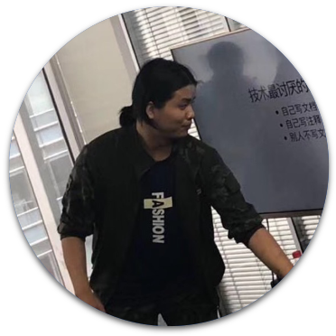

讲师与主题

北京站

洪强宁
爱因互动创始人兼CTO
演讲主题
这16年来我从Python学到了什么
主题简介
从2002年开始接触Python以来，一晃已经16年了，Python从一门极其冷门的小众语言发展成了流行度第三的大众语言（TIOBE Index2018年9月数据），甚至成了引领下次产业革命的人工智能领域首选语言。这期间，我本人也从一个Python 爱好者，变成以Python为主要工作语言的程序员，变成为Python程序员提供服务的架构师，变成为多语言程序员提供服务的架构师，直到变成创业者兼CTO。一路走来，Python都是我的最爱，也是当前创业的利器。本次演讲，我无意挑起语言圣战，单讲我在学习和使用Python过程中，有些什么领悟，希望能给大家一些启发。
讲师简介
爱因互动创始人兼CTO，编程三十余年，12年互联网从业经验，商用对话机器人创业中。曾任豆瓣首席架构师、宜信大数据创新中心首席架构师。资深 Python 开发者，为中国Python用户组（CPUG）的创立者之一。豆瓣网首名全职员工，负责系统架构，经历了豆瓣从日PV十万到数亿的过程，积累了深厚的大规模网站架构经验。曾主导豆瓣内部 PaaS 系统 DAE 和宜信金融容器云 Lain 的建设，有丰富的容器云和微服务架构经验。目前主要关注方向在聊天机器人(chatbot)、云计算、容器技术、微服务、安全技术上。
Ezio Melotti
CPython 核心开发工程师
演讲主题
The Development Process of CPython
主题简介
缺
讲师简介
Ezio Melotti是一名软件工程师，拥有近20年的多语种软件开发和编程经验。他出生在米兰（意大利），于2007年搬家到图尔库（芬兰）并在图尔库上了大学。大学毕业后就留在图尔库应用科学大学任教。在2009年，成为CPython的核心开发人员，多年来贡献了1000多个变更集。他还是bug追踪器和html包的维护者，并在测试套件、文档和标准库上有很大贡献。

李隆（debugtalk)
大疆创新测试开发负责人
演讲主题
借助Python开源生态打造企业级自动化测试框架HttpRunner
主题简介
1、Python 在软件测试领域的生态
2、HttpRunner 的诞生背景
3、HttpRunner 的开发设计思路
4、基于 HttpRunner 的自动化测试方案
5、基于 HttpRunner 的成功实践案例"
讲师简介
李隆（debugtalk），DebugTalk博主，HttpRunner作者。7年软件测试行业经历，重度 Python 爱好者，始终致力于Python在软件测试领域的应用和推广。信奉Python之禅，追求代码的简洁和优雅，于人生亦然。当前在大疆创新负责测试开发方面的工作。

张翔
CPython 核心开发工程师
演讲主题
我的Python进程怎么了
主题简介
分享自己工作场景中 CPython 开发最常遇到的问题和解决问题的调试的工具；以及对未来Python调试、监控的思考。
讲师简介
更新中ing

nightynight
MSRA
演讲主题
Python JIT的实现思路
主题简介
通过元编程扩展对cpython vm的利用，提升代码复用率，抽象能力和运行时程序执行效率。以及介绍如何在兼容cpython生态的情况下引入jit和类型检查工具
讲师简介
来自MSRA，对于Python语言特性及底层有极深的研究

Gashero
独立开发者
演讲主题
解锁GIL的新姿势
主题简介
将系统的介绍GIL的成因以及所带来的副作用。并且带来一整套合理规避GIL的解决方案，更好的提升Python在线上的性能表现。
讲师简介
2005年开始研习Python，陆续分享了过百万字的Python笔记和翻译文档。前土豆网助理架构师，前果壳网创始技术总监，前deepglint工程师，前RoboTerra软件工程总监。无线电/航模/机器人爱好者。

吕路生
蚂蚁金服后端开发
演讲主题
如何在Python中调用Rust
主题简介
分享在Python中调用Rust代码的现状和思路
讲师简介
Python Backend Developer at day, Rustacean at night. PyO3的作者，活跃于Python社区和Rust社区，热心而又勤劳的开源爱好者。

姚钢强
知乎社区事业部技术负责人
演讲主题
主题待定
主题简介
updating
讲师简介
2013年加入知乎，曾担任首页feed流工程技术负责人，在负责feed流项目期间，通过构架优化使响应时间P95从1.6s 降低到700ms，通过开发规范使稳定性由99.9%提升到99.99%。2018年开始负责社区架构组，带领团队用Golang重写了知乎主要的业务模块，节省机器资源75%

何翔宇
TCL互联网事业部Python工程师
演讲主题
理解Python MRO
主题简介
Python作为拥有多继承能力的编程语言，在面向对象继承中，方法的调用和继承的顺序密切相关。Python使用C3线性化算法，计算出的MRO作为方法调用顺序的唯一准则，同时理解MRO可以帮我们在Python面向对象编程更加有游刃有余。
讲师简介
updating

崔庆才 / 静觅
微软中国大数据工程师
演讲主题
健壮高效的网络爬虫
主题简介
本次演讲从抓取、解析、存储、反爬、加速五个方面介绍利用 Python 进行网络爬虫开发的相关知识点和技巧，介绍不同场景下如何采取不同措施高效地进行数据抓取的方法，包括Web抓取、App抓取、数据存储、代理选购、验证码破解、分布式抓取及管理、智能解析等多方面的内容，另外还会结合不同场景介绍常用的一些工具包，全部内容是演讲者在从事网络爬虫研究过程以来的经验精华总结。
讲师简介
崔庆才，北京航空航天大学硕士，《Python3网络爬虫开发实战》作者，静觅博客博主，爬虫博文阅读量已过百万，微软中国大数据工程师，天善智能、网易云课堂讲师，目前正在从事对话聊天方向研究。
李金洪
代码医生主程
演讲主题
人工智能实战案例分享-图像处理与数值分析
主题简介
1.人工智能基本知识及趋势
2.图片分类与微调实战案例
3.人脸识别方向实战案例
4.数值分析方向实战案例
2.图片分类与微调实战案例
3.人脸识别方向实战案例
4.数值分析方向实战案例
讲师简介
代码医生工作室主程序员、大蛇智能创始人。北京派网软件首席人工智能科学家。发布过两套关于CNTK深度学习框架的视频教程。著有：《深度学习之Tensorflow：入门、进阶与实战》与《python带我起飞：入门、进阶、商业实战》两本畅销书。

秦续业
阿里巴巴计算平台事业部技术专家
演讲主题
Mars——基于矩阵的统一计算框架
主题简介
基于矩阵的统一计算框架 Mars，目标把 PyData 的生态带到分布式执行环境，目前支持 Numpy 接口，能在分布式环境执行多维数组操作，它支持在 GPU 上运行，且支持二维稀疏矩阵。目前，Mars 兼容 70% 常见 Numpy 接口。本次分享会介绍目前我们的工作，会介绍 Mars 的实现原理，并且对未来的上层建筑包括 DataFrame 和机器学习进行展望。
讲师简介
主要工作是将Python生态和大数据环境进行结合。过去工作包含编写了pyodps DataFrame框架，这个框架能让用户编写类似 pandas 的代码，但支持在MaxCompute大数据平台、pandas和传统数据库上执行。现在的工作主要是 Mars，这是一个基于矩阵的统一计算框架，目标把PyData的生态带到分布式执行环境，目前支持Numpy接口，能在分布式环境执行多维数组操作，它支持在GPU上运行，且支持二维稀疏矩阵。未来会将 pandas和scikit-learn分布式化。
王顺
谷歌云 / 顾问
演讲主题
Cooking with Google TPUv2: How to train and deploy your models on Google Cloud.
主题简介
1.Introduction of TPU;
2.A tutorial of training/inference a DL/ML model on Google TPUv2 2.1 example 1, 2.2 example 2;
3.Difference between TPUv2 and GPU and trouble shooting of TPUv2. 4 Benchmark of TPUv2 and GPU
2.A tutorial of training/inference a DL/ML model on Google TPUv2 2.1 example 1, 2.2 example 2;
3.Difference between TPUv2 and GPU and trouble shooting of TPUv2. 4 Benchmark of TPUv2 and GPU
讲师简介
Python/Go/C++开发者，主要负责云计算、大数据和深度学习技术在大型企业的落地和最佳实践。曾就职人工智能独角兽Face++及AWS、Oracle等公司。淘咖啡无人便利店人脸识别系统的主要架构和开发者，AWS大数据专家EMR Subject Matter Expert。
陈晓优
韦恩开猿创始人
演讲主题
区块链资产管理中的Python
主题简介
区块链技术革命带来的全新资产类型（数字货币和通证），以及其去中心化的基础架构，正在为全球资产管理行业带来翻天覆地的变化。Python语言凭借成熟的大规模金融应用背景和活跃积极的用户社区，成为了区块链资产管理业务中的首选解决方案。本次演讲旨在分享Python在区块链资产管理的各个生态环节中的应用，以及探讨未来的发展方向。
讲师简介
上海韦恩开猿软件科技有限公司创始人，曾在大型量化私募基金担任量化交易员和基金经理，开发了vn.py量化交易框架，目前是全球用户量最大的开源量化交易类项目之一（Github Star 6071），目前的工作重心主要集中在区块链和数字货币领域的量化交易系统开发。
以哲
平安集团 / 数据科学家
演讲主题
基于Python生态圈的企业级数据科学平台演化路径
主题简介
1. 从0到1搭建数据科学平台的整体演化与架构介绍
2. 0.25时代 "Python+Hive+Shell" 混合编程解决繁琐的人力ETL
3. 0.5时代 "Django+ElasticSearch" 增加客群检索与BI分析支持
4. 0.75时代 "Django+PyHive+PySpark" 增加大数据集群的操作与机器学习任务流
5. 1.0时代 Scheduler 调度集成与平台、集群微服务化
6. 从0到1演化路径中所遇到的种种外部技术阻力与陷阱
7. 总结与展望
2. 0.25时代 "Python+Hive+Shell" 混合编程解决繁琐的人力ETL
3. 0.5时代 "Django+ElasticSearch" 增加客群检索与BI分析支持
4. 0.75时代 "Django+PyHive+PySpark" 增加大数据集群的操作与机器学习任务流
5. 1.0时代 Scheduler 调度集成与平台、集群微服务化
6. 从0到1演化路径中所遇到的种种外部技术阻力与陷阱
7. 总结与展望
讲师简介
AI赋能计划执行人之一，工作之余在上海几所高校担任职云计算与大数据相关方向客座讲师，10年首次接触Python，于15年全面拥抱Python、深耕数据科学界。

何世友
爱范儿CTO
演讲主题
用Python打造Serverless平台，从0到1
主题简介
近年来，应用形态逐渐朝着 PWA、小程序等范客户端形态发展；云计算则朝着 BaaS + FaaS 的 Serverless 无服务架构大步迈进。本次分享向大家介绍爱范儿团队在用 Python 打造小程序领域的 Serverless 平台知晓云的过程中遇到的挑战和收获，以及对接下来的云计算形态的展望。
讲师简介
爱范儿 CTO、知晓云负责人，大学开始创业，先后参与过多个创新创业项目。资深移动互联网应用专家，擅长架构设计，专注云计算、机器学习及移动开发。

孔韬循/K0r4dji
丁牛科技首席安全官
演讲主题
我的Python黑客之路（暂定）
主题简介
Python黑客之路（暂定）' topicSummary: '随着互联网攻击的日益增多，网络信息安全逐渐被人们重视，Python成为了黑客最受欢迎的编程语言，无论是网络攻防还是软件破解，Python非常简单的帮安全人员完成了很多事情，如：自动化攻击等。通过本议题可以了解到Python在信息安全领域的那些事。
讲师简介
孔韬循/K0r4dji ，北京丁牛科技有限公司首席安全官，国内著名信息安全团队--破晓安全团队创始人，人民邮电出版社-异步社区-信息安全领域图书专家顾问

张晋涛
网易资深运维开发工程师
演讲主题
基于Docker的CI/CD实践
主题简介
随着容器化及 cloud native 等生态的形成，CI/CD 在软件开发过程中的价值日益突出，越来越多的公司需要对此进行改造和优化，但是千人千面，改造及实践往往有很多问题，无论是人员还是工具链上。本次主要是分享我们在生产中总结的最佳实践， 及分析在此过程中所遇到的问题，并会详细分享其中的技术细节，以及在此过程中所做优化，问题分析，及架构演化和我们所做的反思和总结，希望大家能从中有所启发，推进各自在生产环境中的落地。
讲师简介
张晋涛，网易资深运维开发工程师，负责容器化及自动化运维体系建设。

邓良驹
秘塔科技 / 工程总监
演讲主题
以史为鉴：半小时理解Web核心技术体系
主题简介
Web技术发展至今已经相当繁杂，相关项目“其小无内，其大无外”，各种前后端框架和中间件更是花样繁多层出不穷。不少入门开发者，甚至工作了三五年的，局限于某一两种框架的使用，把自己看中的框架奉为圭臬，也仅仅熟练于框架封装好了之后的接口，对于框架为什么存在、为什么要那样设计、遇到棘手问题又从何着手解决与优化却力不从心。本主题从Web技术发展的历史沿革为脉络，帮助听众清楚认识Web相关的各项核心技术的作用与要点，以便在今后解决学习工作中遇到的各种问题时目标明确、思路清晰。
讲师简介
从业5年有余，聚焦于Python技术栈服务端架构设计和框架研发。曾任乐视云计算PaaS 平台研发工程师、猎豹移动 AILab数据部门负责人，现任秘塔科技工程总监。业余时间常在技术社群与Python开发者们切磋交流和指导新人。

李辉
Flask开发团队（Pallets Team） / 成员
演讲主题
自由的Flask
主题简介
作为一个流行的Python Web框架，很多开发者都喜欢Flask的简洁和灵活，并且常常拿它和“笨重”的Django做比较。基于这些特点，我们可以说Flask是自由的，自由的Flask会让你的Web开发更加自由。具体来说，这里的自由表现在很多方面，包括程序功能的扩展、路由的定义、项目结构的组织以及程序模式的设计等。
讲师简介
《Flask Web开发实战》作者，有丰富的Flask Web开发经验。

周小毛
艾润物联开发经理
演讲主题
Python在嵌入式系统开发中的应用
主题简介
主要结合本人工作经历，阐述 Python 在嵌入式软件开发过程中的实际运用。具体会分为以下几个部分：
1.嵌入式开发包含哪些内容，主要包括驱动层和应用层开发。
2.Python 能做嵌入式开发中的哪些东西，嵌入式开发的应用层开发都可使用 Python，具体包括后台 web 开发，即时通信开发，GUI开发等等
3.比较 Python 开发相对于传统嵌入式开发的优势。
4.简单阐述嵌入式开发使用 Python 的基本流程，主要阐述 Python 开发环境的搭建过程。
5.最后展示具体应用，智能车场系统管理展示，PLC通信读写操作展示。
1.嵌入式开发包含哪些内容，主要包括驱动层和应用层开发。
2.Python 能做嵌入式开发中的哪些东西，嵌入式开发的应用层开发都可使用 Python，具体包括后台 web 开发，即时通信开发，GUI开发等等
3.比较 Python 开发相对于传统嵌入式开发的优势。
4.简单阐述嵌入式开发使用 Python 的基本流程，主要阐述 Python 开发环境的搭建过程。
5.最后展示具体应用，智能车场系统管理展示，PLC通信读写操作展示。
讲师简介
目前在西安艾润物联网技术服务有限责任公司线下产品担任开发经理，曾就职于杭州海康威视，工作后一直从事嵌入式软件开发，主要涉及摄像机sensor驱动开发、智能门禁系统开发和智能停车场软件开发。

常卉
ThoughtWorks / 咨询师
演讲主题
用Python可以做哪些有趣的事之实现一个包含身份认证模块的网站应用
主题简介
搭建网站是一件很有成就感的事，在''兴趣''驱动开发的大多数人眼中，简单的是对python及其组件的使用，复杂的是将各个模块如同积木一般搭建成一整套的解决方案。在OAuth2.0和OIDC成为标准的现在，给网站集成一个身份认证模块是不是很有用呢？在开发成本，开发周期，可控性方面，AWS提供了一些不错的思路。那么，我们应该如何去用积木来一步步搭建网站应用呢？敬请期待。
讲师简介
曾先后为国内外微服务领域、网站建设提供咨询和交付等服务。擅⻓测试驱动开发，软件架构演进。对技术有热情，热衷于敏捷实践，是持续交付的践行者。
赵文天
北京丁牛科技有限公司 / 渗透测试工程师
演讲主题
Python在密码学中的应用
主题简介
简要介绍Python中涉及到密码学的模块和函数
讲师简介
北京邮电大学-网络信息安全冬令营-高级讲师、广州大学-网络信息安全夏令营-高级讲师、国内著名信息安全研究团队-破晓团队核心成员、北京明园大学-网络空间先进技术学院-高级讲师、Freebuf-DigApis信息安全专栏负责人。

郭李灼
IT老兵 / Python爱好者
演讲主题
我们的养老金怎么办
主题简介
用定投的方式为自己增加额外保障
1 什么是基金定投
2 基金定投的优点
3 基金定投的缺点
4 程序员做基金定投的优势
5 如何用 Python 做定投
1 什么是基金定投
2 基金定投的优点
3 基金定投的缺点
4 程序员做基金定投的优势
5 如何用 Python 做定投
讲师简介
2000年入行，长期从事通信/网络安全，在知名外企熬过资历，也参与过创业热潮。目前在一家信息安全公司做解决方案。业余时间致力于普及Python编程，让Python成为一门人人可以使用的工具，组织多个Python公益qq群，通过直播的方式传播入门课程。爱好量化投资，在股票，期货，加密货币等多个品种上经历过亏损，逐步聚焦基金定投，风险减少，收益稳定。
上海站

王晓雷
ThoughtWorks算法科学家
演讲主题
机器智能的局限，从图像识别到自然语言处理
主题简介
AI是数学。 虽然在创建深度神经网络时我们不需要证明某些东西，但我们使用统计方法来从数据中学习模式。 不出所料，我们在模型背后做了一些看不见的假设，这种假设永远不会导致情报能够理解和概括世界。 今天我们将讨论基于一些现实世界项目的机器智能的局限性，从图像识别到自然语言处理，关于数据和模型。
对于python玩家，本演讲可能会回答以下问题：
1.如何知道我的问题是否可以通过人工智能解决？
2.如何设计现实问题的指标？
3.如何知道模型是否“足够好”？
4.有多少数据足以训练模型？
5.使用Python进行深度学习时的提示和技巧。
讲师简介
王晓雷，ThoughtWorks中国区咨询团队首席算法科学家，曾经为多个海内外项目包括银行和保险公司、金融服务机构、地产广告公司、日用消费品公司、教育服务机构、通信科技公司等提供数据和算法相关咨询服务，主要包括数学建模与优化、非结构化数据处理、自然语言处理、图像识别等，在人机交互、精准营销领域均有端到端经验，真正实现定制化挖掘数据的价值。

张校捷
英伟达深度学习架构工程师
演讲主题
PyTorch入门指北
主题简介
1. PyTorch简介
主要介绍PyTorch动态图的特性，以及PyTorch和其他深度学习框架的比较。
2. PyTorch新特性介绍（主要针对0.4版本）
介绍PyTorch 0.4（如果1.0发布的话，可能包括1.0）的新特性，帮助大家把代码迁移到新版本上
3. 如何使用PyTorch建立一个简单的神经网络
介绍PyTorch的简单使用方法（nn.Module的使用）
4. PyTorch的并行训练
介绍如何使用多GPU训练PyTorch模型（使用apex库）
5. 使用ONNX部署PyTorch模型
介绍如何通过ONNX格式来固化模型，并且在Caffe2上部署模型
6. PyTorch踩坑指北
介绍写PyTorch的时候可能会碰到的各种坑
7. 总结
讲师简介
现在在英伟达担任深度学习架构工程师，主要负责基于GPU的深度学习模型的优化相关的研究。在工作中主要Python的主要应用场景是建立深度学习模型，主要使用的深度学习框架是PyTorch和TensorFlow。希望能在PyCon上给大家带来一下PyTorch的经验分享。

Jon
Yield.IM 创始人
演讲主题
python从头实现以太坊
主题简介
《Python从头实现以太坊》的目标是将以太坊这枚“火箭”拆解，一探究竟，然后再用 Python 重新组装起来。我们重点并非为了再造一个以太坊，而是为了在这个过程中获得体验。这个系列大致可以分为四个篇章，分别是P2P网络协议、区块链结构、共识计算和智能合约。这次主题探讨的是P2P网络协议部分，我们将尝试用 Python 连上以太坊网络并顺利通讯。
讲师简介
连续创业者，10年以上Web应用架构经验，主要写Python/Rust/JavaScript/Haskell语言，以太坊早期拥趸和布道者，开源软件支持者。目前重心在区块链支付项目 Yield.IM
陈晓优
上海韦恩开猿软件科技有限公司创始人
演讲主题
区块链资产管理中的Python
主题简介
区块链技术革命带来的全新资产类型（数字货币和通证），以及其去中心化的基础架构，正在为全球资产管理行业带来翻天覆地的变化。Python语言凭借成熟的大规模金融应用背景和活跃积极的用户社区，成为了区块链资产管理业务中的首选解决方案。本次演讲旨在分享Python在区块链资产管理的各个生态环节中的应用，以及探讨未来的发展方向。
讲师简介
上海韦恩开猿软件科技有限公司创始人，曾在大型量化私募基金担任量化交易员和基金经理，开发了vn.py量化交易框架，目前是全球用户量最大的开源量化交易类项目之一（Github Star 6071），目前的工作重心主要集中在区块链和数字货币领域的量化交易系统开发。

张佳圆
爱奇艺后端开发工程师
演讲主题
Type Hints 最佳实践
主题简介
1. 类型系统介绍，静态类型和动态类型的介绍对比
2. 什么是 Type Hints
3. 为什么需要使用 Type Hints
4. 几种使用 Type Hints 的使用方法
5. Type Hints 存在的一些问题以及在 Python 3.7 中的改进
6. 如何在真是项目中开始实践 Type Hints
7. 持续集成 mypy 进行类型检查
8. Type HInts 的未来，CPython 运行时优化？JIT？
讲师简介
现在在爱奇艺担任后端开发工程师（Python 方向)，4 年 Python 使用经验，在工作中主要使用 Python 进行 Web 开发，本次 PyCon 将分享在实际项目中使用 Type HInts 的一些经验。

丁来强
阿里云日志服务上海团队负责人
演讲主题
扩展Jupyter/IPythonNB，赋能你的云服务
主题简介
Jupyter（IPython Notebook）很酷很流行，除了拿来主义，扩展Jupyter似乎很难？本议题深入浅出的以一些实际插件为例，介绍如何扩展Jupyter链接你的云服务，优化服务的输出，让Jupyter更智能，为你的项目和客户很好地服务。
讲师简介
从业10+年, 曾就职于Splunk(美国纳斯达克第一家纯大数据的上市公司)任架构师, 技术兴趣广泛. 曾在PyCon 2015/2016大会上做过5个议题的分享，覆盖大数据分析处理可视化、Python函数式编程/设计模式、 Python大数据调度引擎、Pythin核心注入技术等议题，深受好评。
赖信涛
蚂蚁金服SRE
演讲主题
Python 文化中的接口和协议
主题简介
为什么得到对象的长度是 len() 而不是 obj.length() ？ 迭代器和可迭代对象有什么区别？为什么写 Python 代码我们很少用到设计模式？这背后都是 Python 语言中“协议”的思想，本演讲将会讨论如何理解 Python 中的协议，这其中的设计思想是什么，写 Python 代码如何贯彻这一思想。
讲师简介

丁俊豪
上海绿岸网络科技运维开发
演讲主题
Pyenv 从入门到放弃——Python 多版本多环境实战
主题简介
- Python 多版本，多环境共存现状分析
- 传统解决方案
- Pyenv 优势
- 你安装 Pyenv 的姿势对么
- Pyenv 最佳实践
讲师简介
网名挨踢小胖(ITXiaoPang)， 开源天空 网站创始人，从2003年开始接触编程，熟悉多种语言，独爱 Python。目前在某知名游戏公司从事 Python 的运维开发工作。

Jiyoon Lim
Coupang数据分析师
演讲主题
Python - 机器学习与人类学习
主题简介
我想发表演讲的主题是关于非Pythonic方式和Pythonic方式来解决业务问题之间的比较。 当我从商业领域转向技术领域时，我体验到双方在解决业务问题方面的不同之处。 我将介绍使用K-Means在FC网络分析中必须解决的实际问题以及专业Excel用户如何解决此问题。
讲师简介
在电子商务公司的SCM Data Science团队担任数据分析师。 该团队分析与SCM相关的所有内容以及一些与FC相关的主题。 每天使用和学习Python是一种很棒的体验！

吴江
易安信资深工程师
演讲主题
使用numba优化python代码
主题简介
因为动态类型的原因，python的性能一直是令人头疼的问题，python3的发布并没有带来性能的提升，pypy这种支持jit的解释器性能仍然不够好。本演讲将用一段性能测试代码，逐步进行优化，并展示调优的过程，来讲解如何用numba和cython优化python代码的性能，可以和Go一样快。
讲师简介
现在Mozy组负责Web后端开发。有多年高访问量Web后端的开发优化经验。
深圳站

Zoom.Quiet (大妈)
北京优视眼动科技 CTO
演讲主题
但行好事 莫问前程
主题简介
讲师简介
江湖人称大妈的大妈 Pythoneer ;-)
Python 中文社区创始人 / 管理员,热心于python社区的公益事业,大家熟知的社区"大妈";OBP及蟒营工程设计者 /主持人;参与并主持各种线上 / 线下活动,主持编撰了 "可爱的Python";坚持用 Pythonic 感化国人进入 FLOSS世界进行学习 / 分享 / 创造!
李隆
(debugtalk） 大疆创新测试 开发负责人
演讲主题
借助 Python 开源生态打造企业级自动化测试框架（HttpRunner）
主题简介
- Python 在软件测试领域的生态 - HttpRunner 的诞生背景 - HttpRunner 的开发设计思路 - 基于 HttpRunner 的自动化测试方案 - 基于 HttpRunner 的成功实践案例
讲师简介
李隆（debugtalk），DebugTalk 博主，HttpRunner 作者。7年软件测试行业经历，重度 Python 爱好者，始终致力于 Python 在软件测试领域的应用和推广。信奉 Python 之禅，追求代码的简洁和优雅，于人生亦然。当前在大疆创新负责测试开发方面的工作。
何世友
爱范儿 CTO
演讲主题
用 Python 打造 Serverless 平台，从 0 到 1
主题简介
近年来，应用形态逐渐朝着 PWA、小程序等范客户端形态发展；云计算则朝着 BaaS + FaaS 的 Serverless 无服务架构大步迈进。本次分享向大家介绍爱范儿团队在用 Python 打造小程序领域的 Serverless 平台知晓云的过程中遇到的挑战和收获，以及对接下来的云计算形态的展望。
讲师简介
爱范儿 CTO、知晓云负责人，大学开始创业，先后参与过多个创新创业项目。资深移动互联网应用专家，擅长架构设计，专注云计算、机器学习及移动开发。

和坚
ThoughtWorks 咨询师 前互联网金融公司CTO
演讲主题
只能用 Java 做微服务？Python 也可以
主题简介
由于种种原因，很多时候说到微服务貌似使用的语言只有 Java，其实微服务的初衷是希望不同的服务能够根选择自己擅长或者喜欢的语言来开发。这个话题就想聊聊用 Python 怎么微服务，主要内容有为什么要使用 Python 来做微服务，使用 Python 如何设计一个微服务架构，有了架构在实现的时候如何编写 Python 微服务，最后简单介绍一下在部署微服务的时候应该注意些什么。希望通过这个话题能够让大家能够建立一个 Python 微服务的体系，在某些场景下能够利用 Python 的优势快速实现基于微服务架构的应用。
讲师简介
十多年IT从业经验，从技术到金融，从金融到风控，从风控到互联网，从互联网到咨询。不断走出舒适区，体验多维的人生。

river4
优趣天下 创始人
演讲主题
安卓上编译 Python 实践笔记
主题简介
通过分享在安卓上移植编译 Python 的实践经验与大家一起深入 Python 这个软件工程的结构设计，以及如何阅读 Python 源码，甚至扩展 Python 代码。 涵盖的内容包括 - 在安卓平台运行 Python 的意义 - 安卓平台与标准 Linux 平台的一些共同点和差异 - 编译工具链的方案及一些问题 - Python 代码结构 - 怎么运营一个基于编程工具的社区
讲师简介
优趣天下创始人，全球最流行的安卓 Python 应用 QPython 作者，前Zynga高级开发工程师、前绿盟科技产品经理、前新浪邮件高级开发工程师。

陈绍琛
深圳花果山科技有限公司技术总监
演讲主题
Python 在中小电商的应用与实践
主题简介
以一个 Pythoneer 的角度见证一个电商5年的沉浮发展，分享在此过程中如何利用各种开源方案解决性能优化，如何在不断变化的业务与不断调整的商业模型中为公司提供高效的工具让其处于有利的竞争地位。探讨80后程序员在不断发展的形势面前如何保持自己的竞争力，如何组建自己的团队，如何健康的生活。
讲师简介
2009年毕业于哈尔滨工程大学硕士学位。曾就职于诺基亚，华为等公司，2013年初加入深圳花果山科技有限公司工作至今。爱好编程，中医，传统武术等。
黄毅
风雷互动 CTO
演讲主题
Python 和公链开发
主题简介
- 使用 Python 开发并实现Cardano（区块链）项目。 - 对比 Python 和 Haskell 语言在区块链项目方面的特点。 - 介绍 Cardano 项目本身的开发细节。
讲师简介
10多年的老 Pythoneer，从事过 Web 前后端，手游前后端，游戏引擎开发，杂七杂八的编程语言，从码农到 CTO。近年来深入研究区块链相关技术。

朱烨华（Ed Zhu）
深圳领脉科技 CEO
演讲主题
用 Python 和深度学习构建下一代聊天机器人
主题简介
深度学习框架下维护聊天助手个性一致的技术框架，很明显还可以衍生出很多种其他方案，但是技术思路应该是类似的，核心思想是把聊天助手的个性信息在Decoder 阶段能够体现出来，以达到维护个性一致的目的。
讲师简介
斯坦福大学计算机科学专业，虚拟化和云计算专家，拥有多项云计算研发专利。曾任职全球数据存储行业龙头企业EMC技术总监等
Anqur
华为 网络产品开发工程师
演讲主题
浅谈 Python 事件循环与协程
主题简介
在异步编程领域 Python 有着十几年的经验和积累, 从 asyncore, futures 到 tasks, coroutines, Python 3.x 的异步能力围绕着 asnycio 在近几年内迅猛提升. 本演讲主题从一个极小的疑问发起, 浅谈协程与事件循环在 Python 中的联系与实践。
讲师简介
Python 爱好者, 关注系统编程领域. 14 年蟒营接触 Python 至今, 本科毕业第一个月的新工程狮一枚, 珠海 GDG 活跃分子.
成都站

罗启涵
ThoughtWorks软件开发工程师
演讲主题
Python类型检查机制在工程实践中的应用
主题简介
演讲主要侧重于python类型检查，在工程实践中的应用。利用Pytho的类型注解，帮助我们在真实生产环境开发出更高质量的代码，避免动态语言在大型工程项目中的代码坏味道（code smell）以及高效的重构。本次演讲会介绍采用类型注解带来的好处，以及在Python中它是如何运作的。深入理解Python的类型检查机制。
讲师简介
目前供职于某海外银行项目， 负责后台数据系统开发工作。曾就职于华为，赛门铁克/Veritas。
秦续业
阿里巴巴计算平台事业部技术专家
演讲主题
Mars——基于矩阵的统一计算框架
主题简介
基于矩阵的统一计算框架 Mars，目标把 PyData 的生态带到分布式执行环境，目前支持 Numpy 接口，能在分布式环境执行多维数组操作，它支持在 GPU 上运行，且支持二维稀疏矩阵。目前，Mars 兼容 70% 常见 Numpy 接口。本次分享会介绍目前我们的工作，会介绍 Mars 的实现原理，并且对未来的上层建筑包括 DataFrame 和机器学习进行展望。
讲师简介
主要工作是将 Python 生态和大数据环境进行结合。过去工作包含编写了 pyodps DataFrame 框架，这个框架能让用户编写类似 pandas 的代码，但支持在 MaxCompute 大数据平台、pandas 和传统数据库上执行。现在的工作主要是 Mars，这是一个基于矩阵的统一计算框架，目标把 PyData 的生态带到分布式执行环境，目前支持 Numpy 接口，能在分布式环境执行多维数组操作，它支持在 GPU 上运行，且支持二维稀疏矩阵。未来会将 pandas 和 scikit-learn 分布式化。
周小毛
西安艾润物联开发经理
演讲主题
Python在嵌入式系统开发中的应用
主题简介
演讲主要结合本人工作经历，阐述python在嵌入式软件开发过程中的实际运用。具体会分为以下几个部分： 1.嵌入式开发包含哪些内容，主要包括驱动层和应用层开发。 2.Python能做嵌入式开发中的哪些东西，嵌入式开发的应用层开发都可使用python，具体包括后台web开发，即时通信开发，GUI开发等等 3.比较python开发相对于传统嵌入式开发的优势。 4.简单阐述嵌入式开发使用python的基本流程，主要阐述python开发环境的搭建过程。 5.最后展示具体应用，智能车场系统管理展示，PLC通信读写操作展示。
讲师简介
目前在艾润物联线下产品担任开发经理，曾就职于杭州海康威视，工作后一直从事嵌入式软件开发，主要涉及摄像机sensor驱动开发、智能门禁系统开发和智能停车场软件开发。

李者璈
Manjusaka/闪银奇异高级 Python 开发
演讲主题
去 async/await 之路
主题简介
从15年到现 async/await 也诞生3个年头了，闪银也在 async/await 上探索1年多了。这次分享我将向大家讲诉 async/await 的前世今生，同时分享我们这一年多以来所遇到的各类意想不到的坑点。
讲师简介
李国建
贝壳金服房产金融数据部研发负责人
演讲主题
Databot:数据驱动开发框架介绍
主题简介
开源项目Databot(https://github.com/kkyon/databot)是基于asyncio和queue封装，数据驱动开发框架。能够满足数据工程师快速构造数据脚本，并且保证模块化，灵活性，和高性能。演讲中会介绍项目基本情况，和框架实现原理。并会举例如何基于databo如何快速实现框架在爬虫，ETL,等数据处理场景中的使用案例。以及未来开源项目的发展方向
讲师简介
目前就职贝壳金服，负责房产金融数据研发部门。曾就职于亚信，点融网，在企业应用，金融大数据研发方面有丰富经验
杭州站

李枫
自由职业者
演讲主题
GraalPython--新的Python运行时
主题简介
1) GraalVM简介及Python在OpenJDK开发中的重要作用 2) 深入分析GraalPython的实现 3) 重新思考和设计Python运行时 4) 在开源ARM平台（如树莓派/96Boards等）上实践GraalPython/GraalVM
讲师简介
先后就职于Motorola, Samsung, Alibaba, EMC, Citrix等IT公司，现为自由职业者。熟悉基于ARM+Linux的嵌入式软件平台架构, 在甲骨文JavaME, 高通BREW, 摩托罗拉P2K，谷歌Android，三星Tizen等移动平台上具备十余年研发经验。
近几年主要从事云计算相关研发工作，在数据中心软硬件架构，软件定义存储，虚拟化，信息安全，高性能网络等技术领域积累了一定的经验。
是《灰帽黑客 第4版：正义黑客的道德规范、渗透测试、攻击方法和漏洞分析技术 》一书中文版的主要译者： http://product.dangdang.com/23927890.html 对技术创新具有浓厚的兴趣和实践能力，热心参与开源社区的各种活动，多次参加各种IT会议并作技术分享
金碧辉
诺基亚贝尔 机器学习工程师
演讲主题
Log Analysis: Machine Learning With Dig Data
主题简介
分享应用机器学习对海量已分析的软件运行产生的log进行学习，实现对未分析log进行机器自动分析归类，提高调查问题的效率的解决方案以及技术架构，涉及大数据带来的数据存储，计算机内存，特征提取效率，模型训练效率的挑战。
方案基于诺基亚Cloud，S3以及GPU等资源，应用了spark，tensorflow等framework，以python为主要开发语言，分享使用python在机器学习工程处理大数据的思考与挑战。
讲师简介
主要从事机器学习/深度学习的建模，应用机器学习/深度学习分析公司软件产生的log，提高软件产品开发维护的效率。并任deeplearning.ai课程Sequence Models助教。
秦续业
阿里巴巴计算平台事业部 技术专家
演讲主题
Mars——基于矩阵的统一计算框架
主题简介
基于矩阵的统一计算框架 Mars，目标把 PyData 的生态带到分布式执行环境，目前支持 Numpy 接口，能在分布式环境执行多维数组操作，它支持在 GPU 上运行，且支持二维稀疏矩阵。目前，Mars 兼容 70% 常见 Numpy 接口。本次分享会介绍目前我们的工作，会介绍 Mars 的实现原理，并且对未来的上层建筑包括 DataFrame 和机器学习进行展望。
讲师简介
主要工作是将 Python 生态和大数据环境进行结合。过去工作包含编写了 pyodps DataFrame 框架，这个框架能让用户编写类似 pandas 的代码，但支持在 MaxCompute 大数据平台、pandas 和传统数据库上执行。现在的工作主要是 Mars，这是一个基于矩阵的统一计算框架，目标把 PyData 的生态带到分布式执行环境，目前支持 Numpy 接口，能在分布式环境执行多维数组操作，它支持在 GPU 上运行，且支持二维稀疏矩阵。未来会将 pandas 和 scikit-learn 分布式化。
孔晓泉
亿咖通 研发工程师
演讲主题
Python 环境下的自然语言处理
主题简介
自然语言处理（Natural Language Processing, NLP）作为人工智能领域的一个重要分支，现在已经成为人工智能研究、创业和落地的热点方向。本次分享将从理论和实践结合的角度，介绍 NLP 的理论、实现和流程，同时将介绍 Python 环境下重要的工业级开源框架：SpaCy 和 RASA NLU，并提供针对中文场景的具体建议。
讲师简介
从事自然语言处理两年多，有丰富的理论和实践经验。目前在吉利集团旗下车联网公司从事车载人机交互系统的研发工作，曾在阿里巴巴集团从事自然语言相关的框架和算法开发工作。

王斌鑫
阿里云 高级开发工程师
演讲主题
Python 源码加密
主题简介
在对外发行 Python 应用时，我们可能出于个人或商业的保密要求，需要加密源码。主流的加密方式有发行 .pyc 文件、混淆源码、使用 Cython 编译等。本次分享将简单介绍现有加密方式的优点与不足，再重点介绍如何基于对称加密和非对称加密算法定制 Python 解释器，从而达到加解密源码的目的。
讲师简介
开源图书《Python 最佳实践指南》中文版译者、开源Python跨平台工具库“pydu”作者，Python热爱者和工作者。从事过采控平台设计、Agent开发、测试工具开发和项目管理等工作。